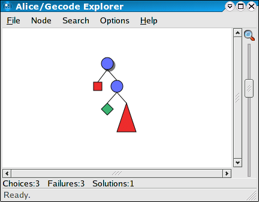
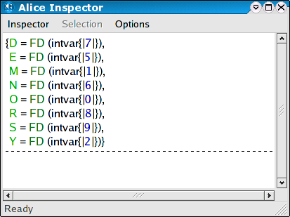

Constraint-based problem solving is a technique for solving hard combinatorial problems that can be stated as variables ranging over a finite domain of non-negative integers, or sets thereof. Problems in this class range from puzzles to real world applications as diverse as scheduling, ware house allocation, configuration and placement.
The two basic techniques of constraint programming are constraint propagation and constraint distribution. Constraint propagation is an efficient inference mechanism obtained with concurrent propagators accumulating information in a constraint store. Constraint distribution splits a problem into complementary cases once constraint propagation cannot advance further. By iterating propagation and distribution, propagation will eventually determine the solutions of a problem.
Constraint distribution can easily lead to an exponential growth of the number of subproblems to be considered. Fortunately, this potential combinatorial explosion can often be contained by combining strong propagation mechanisms with problem specific heuristics for selecting distribution steps.
The Alice constraint programming features build upon the Gecode constraint library.
The following classic puzzle gives a first idea of the combinatorial problems constraint programming can solve.
The Send More Money problem consists in finding distinct digits for the letters S, E, N, D, M, O, R, Y such that S and M are different from zero (no leading zeros) and the equation
SEND + MORE = MONEY
is satisfied. The unique solution of the problem is 9567 + 1085 = 10652.
The constraint programming functionality of Alice is provided through a library interface, containing the following components:
Finite domains constraints describe the set of values a non-negative integer variable may take.
As a simple example of a complete program solving a finite domain problem, consider the Send More Money problem. It consists in finding distinct digits for the letters S, E, N, D, M, O, R, Y such that S and M are different from zero (no leading zeros) and the equation
SEND + MORE = MONEY
is satisfied. The unique solution of the problem is 9567 + 1085 = 10652.
Using Alice, the problem can be solved as follows. First, we have to define a so-called script that encodes the problem:
fun money sp =
let
val v as #[S,E,N,D,M,O,R,Y] = fdtermVec (sp, 8, [0`#9])
in
distinct (sp, v, FD.BND);
post (sp, S `<> `0, FD.BND);
post (sp, M `<> `0, FD.BND);
post (sp, `1000`*S `+ `100`*E `+ `10`*N `+ D `+
`1000`*M `+ `100`*O `+ `10`*R `+ E `=
`10000`*M `+ `1000`*O `+ `100`*N `+ `10`*E `+ Y, FD.BND);
branch (sp, v, FD.B_SIZE_MIN, FD.B_MIN);
{S,E,N,D,M,O,R,Y}
end
val money :
Modeling.space ->
{D : term, E : term, M : term, N : term, O : term, R : term, S : term,
Y : term} = _fn
Constraint problems have to be formulated as a script, a unary function taking a computation space and posting the necessary constraints to that space. The script makes use of the Modeling component to formulate the constraints conveniently. See the description of the FD and Modelin structures for a detailed description of the meaning of the above constraints.
The Send More Money problem cannot be solved using constraint propagation alone. Search is required to reduce the problem space until constraint propagation is able to determine the solution. The distribute function in the script specifies the distribution strategy used when the problem space has to be split for search. See the Mozart Constraint Programming Tutorial for a more detailed explanation of the basic concepts.
To perform the actual search and obtain all solutions to the problem, predefined search engines can be used:
Search.searchAll money
### loaded signature from x-alice:/lib/gecode/Search
val it :
Space.space list *
{D : term, E : term, M : term, N : term, O : term, R : term, S : term,
Y : term} =
([_val],
{D = FD (_val), E = FD (_val), M = FD (_val), N = FD (_val), O = FD (_val),
R = FD (_val), S = FD (_val), Y = FD (_val)})
The actual solutions could now be extracted from the result record using the functions from the FD.Reflect library structure. However, the easiest way to obtain the solutions is to interactively explore the search tree induced by the script using the Explorer instead of offline Search:
Explorer.exploreAll money val it : unit = ()

Double-clicking on the only solution node in the search tree (the green diamond) will open an Inspector window displaying the variable assignments of the solution.

Chosing an inner node will display the information available at the respective point of the search tree.
Finite set constraints describe the possible elements that can be contained in the set denoted by a set variable.
Alice supports a wide range of finite set constraints, including finite set selection constraints and reified constraints.
Like Mozart, Alice supports the unique concept of first-class computation spaces that can be used to program inference engines for problem solving. See the Space component for details.